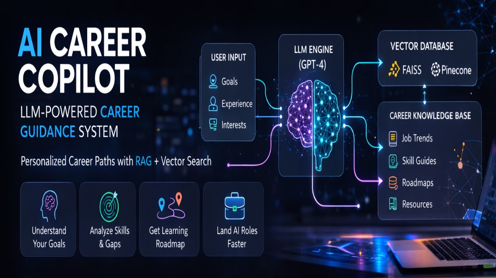
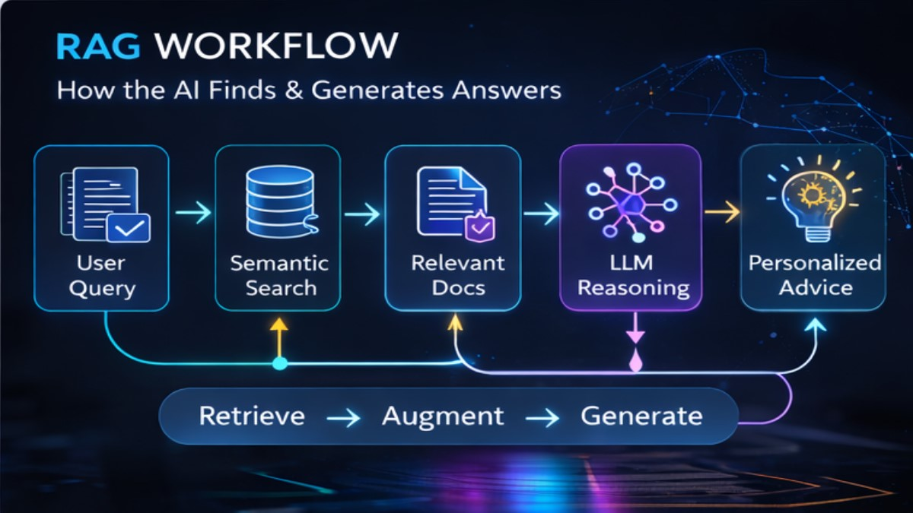
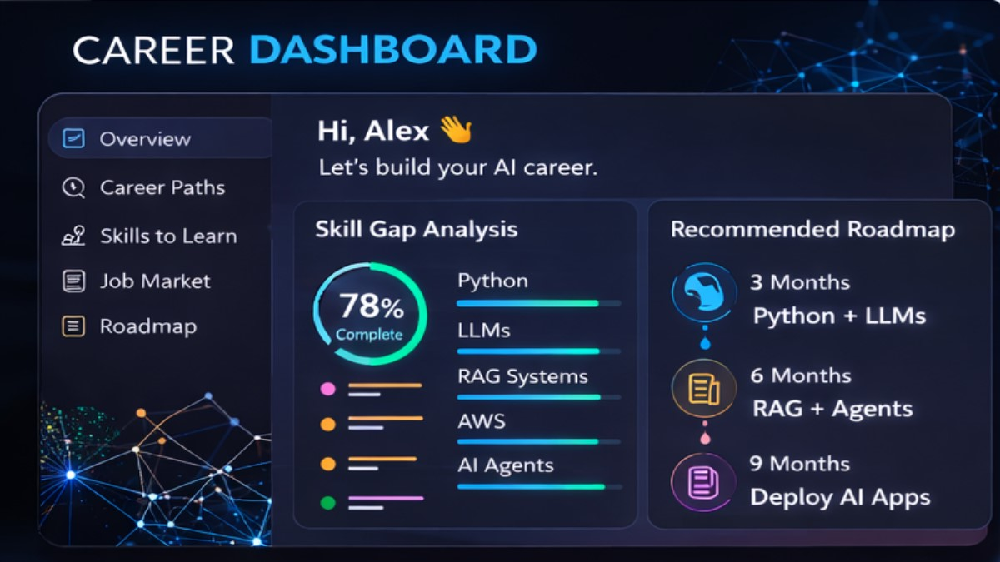
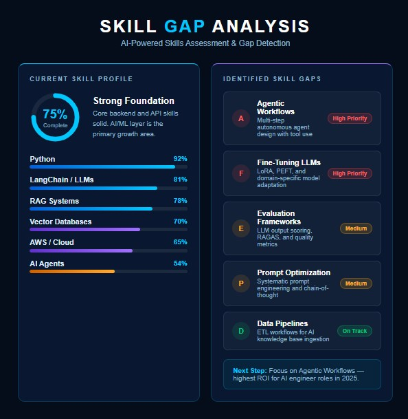
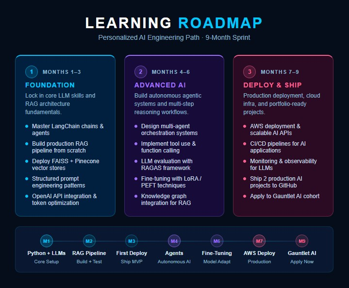

[ close ]
LLM-powered career guidance built on RAG + Vector Search. Analyzes your skill profile, retrieves context from a curated knowledge base, and generates personalized roadmaps — grounded in real data, not generic advice.

Generic chatbots answer from training weights — static, stale, and easily hallucinated. This system retrieves relevant context at inference time: job trend documents, skill guides, and curated roadmaps are embedded, stored in a vector database, and pulled dynamically to ground every response.

The Streamlit frontend keeps it simple: input your profile, get back a skill gap analysis with scored recommendations and a phased learning roadmap. Sources are shown — you can see exactly which documents grounded the response.



Switched from fixed-size to recursive character splitting and saw a noticeable improvement in retrieval quality — before touching the LLM at all. The bottleneck in RAG is usually retrieval, not generation.
Explicit output format instructions, grounding reminders ("answer only from the provided context"), and role framing each measurably changed response quality. Tracking changes systematically revealed which prompts actually helped.
FAISS is excellent for development — fast, no infrastructure. But the lack of metadata filtering became a wall when the knowledge base grew. Pinecone's filter-before-retrieve pattern solved this cleanly.
Demos don't tell you if your system is good. RAGAS gives you faithfulness and context recall scores. The pipeline didn't feel production-ready until I had a repeatable eval suite showing where it was failing.